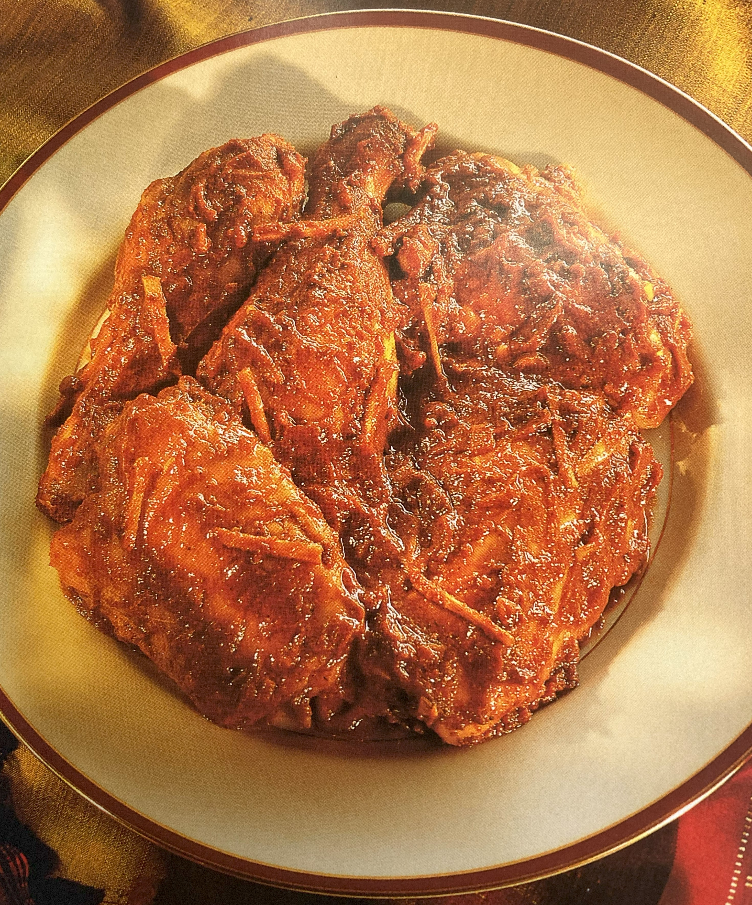

Kashmir Chicken Curry

Ingredients
Switch to Steps
-
4 tsp Kashmir Masala Paste
-
4 Tbsp Tomato Ketchup
-
1 tsp Worcestershire Sauce
-
1 tsp Five-Spice Powder
-
1 tsp Granulated Sugar
-
8 Chicken Joints, skinned
-
3 Tbsp Vegetable Oil
-
2 in Piece of Fresh Ginger, finely chopped
-
4 Garlic Cloves, crushed
-
Juice of 1 Lemon
-
1 Tbsp Fresh Cilantro Leaves, finely chopped
Steps
Switch to Ingredients
Marinae
-
Mix the masala paste, tomato ketchup, Worcestershire sauce, five-spice powder, salt and sugar.
-
Allow the mixture to rest in a warm place until the sugar has dissolved.
Chicken
-
Rub the chicken pieces with the marinade and allow to rest in a cool place
for 2 hours or in the refrigerator overnight.
-
Bring to room temperature before cooking.
-
Heat the oil in a wok or large pan.
-
Fry HALF the ginger and ALL the garlic until golden.
-
Add the chicken and fry until both sides are sealed.
-
Cover and cook until the chicken is tender, and the oil has separated from the sauce.
-
Sprinkle the chicken with the lemon juice, remaining ginger and chopped cilantro Leaves
and mix well.
-
Serve hot.